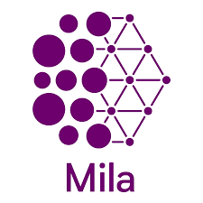

About
I am currently an Applied AI/ML Researcher at Huawei Canada working primarily on LLMs for code/software engineering (e.g. agentic AI, Code LLM training & evaluation, RL-based training, ML deployment and optimization).
I completed my M.Sc. at Probabilistic Vision Group (PVG) lab under Dr. Tal Arbel at McGill University and Mila Quebec AI Institute, researching applications of deep learning in the medical domain, related to 3D brain imaging (MRI), clinical data, and neurological diseases such as Multiple Sclerosis and Alzheimer's diseases (e.g. disease prediction, segmentation, and detection). Primarily, my focus was on metalearning, transformers models, and attention mechanisms for multimodal learning in medical ML. Prior to that, I completed my B.Eng, Computer Engineering at Toronto Metropolitan University (formerly Ryerson University), where I assisted with research into ML applications in biomedical signal processing and ML on edge optimizations at Ryerson Multimedia Lab.
Feel free to reach out on LinkedIn!
Research Interests (ever changing)
- Applied LLMs for Code & Software Engineering
- AI Agents
- Reinforcement Learning (RL) for LLM
- ML Engineering & Optimization (ML on edge)
- Medical ML
- Computer Vision & Multimodal Learning
- Metalearning & Learning Dynamics
Industry
Academic
-

M.Sc., Applied ML
McGill University, Montreal, Canada
(2021 - 2023)
-

M.Sc. (co-located w/ McGill)
Mila Quebec AI Institute, Montreal, Canada
(2021 - 2023)
-
B.Eng., Computer Engineering
Ryerson University, Toronto, Canada
(2015 - 2020)
Publications & Talks
SWE-Effi: Holistic Effectiveness Evaluation of AI Systems Under Resource Constraints
Z. Fan, K. Vasilevski, D. Lin, B. Chen, Y. Chen, Z. Zhong, J. Zhang, P. He, AE. Hassan; Preprint; 2025.
RepoForge: Training a SOTA Fast-thinking SWE Agent with an End-to-End Data Curation Pipeline Synergizing SFT and RL at Scale
Z. Chen , C. Zhao , B. Chen, D. Lin, A. Leung, GK Rajbahadur, G. Oliva, Y. Chen, Y. Yang, A. Y. Chun Yong Chong, H. Zhang, K. Vasilevski, Y. Ouatiti, A. Bhatia , AE. Hassan; Preprint; 2025.
The Hitchhikers Guide to Production-ready Trustworthy Foundation Model powered Software (FMware)(Website)
K. Vasilevski, B. Rombaut, GK. Rajbahadur, GA. Oliva, K. G, FR Cogo, D. Lin, H. Zhang, B. Chen, K. Thangarajah, AE Hassan, Z. Ming; ACM Knowledge Discovery and Data Mining (KDD 2025); 2025.
Turbocharging AIware: Performance Engineering for Production-Ready FMware (Tutorial)
H. Zhang, K. Thangarajah, K. Vasilevski, A. Leung, Boyuan Chen, AE. Hassan; IEEE CASCON; November 2025.
A Tutorial on Software Engineering for FMware.
F. Cogo, GK. Rajbahadur, D. Lin, K. Gallaba, B. Rombaut, G. Oliva, J. Lin, K. Vasilevski, and AE. Hassan.; Proceedings of the 33rd ACM International Conference on the Foundations of Software Engineering (ACM FSE'25); 2025.
Real-time Adapting Routing (RAR): Improving Efficiency Through Continuous Learning in Software Powered by Layered Foundation Models
K. Vasilevski, D. Lin, AE. Hassan; IEEE International Conference on Software Engineering (ICSE 2025); 2025.
(Presentation) Balancing Cost and Quality in FMware (slides)
K. Vasilevski, D. Lin, AE. Hassan; AIware Leadership Bootcamp 2024, Toronto; (also mini-bootcamp @ ICSE 2025, UOttawa), Canada.
Watson: A Cognitive Observability Framework for the Reasoning of LLM-Powered Agents
B. Rombaut, S. Masoumzadeh, K. Vasilevski, D Lin, AE Hassan; IEEE/ACM ASE'25; 2025.
Meta-learning for Clinical and Imaging Data Fusion for Improved Deep Learning Inference
Vasilevski, K., McGill University, Canada (2023).
Consensus Learning with Multi-rater Labels for Segmenting and Detecting New Lesions (Competition paper)
NICHYPORUK, B., VASILEVSKI, K., HU, A., MYERS-COLET, C., CARDINELL, J., SZETO, J., FALET, J.-P., ZIMMERMANN, E., SCHROETER, J., ARNOLD, D. L., AND ARBEL, T. Multiple Sclerosis New Lesions Segmentation Challenge, MICCAI (2021).
2025, made with in pure Bootstrap 4, inspired by Academic Template for Hugo